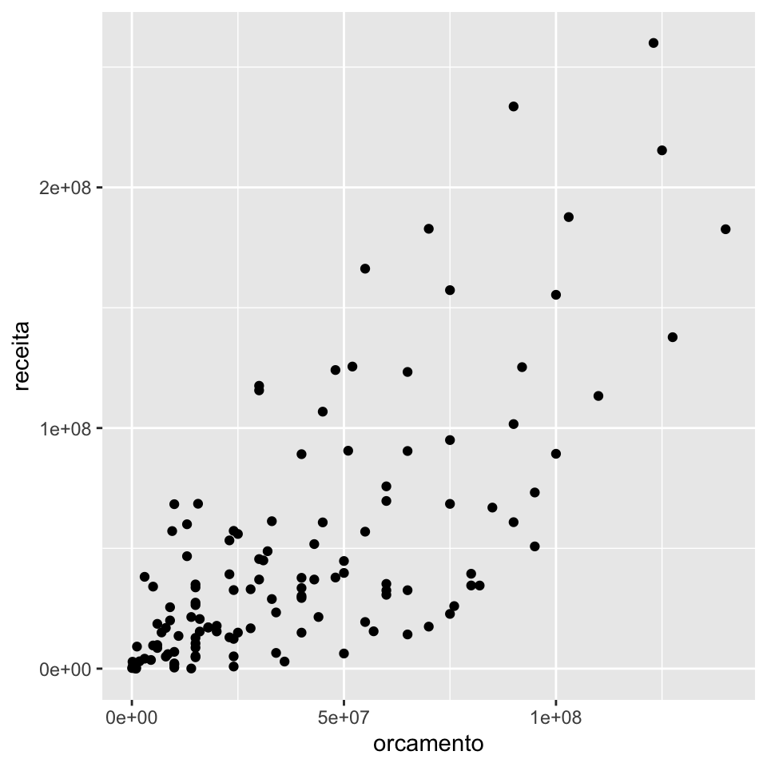
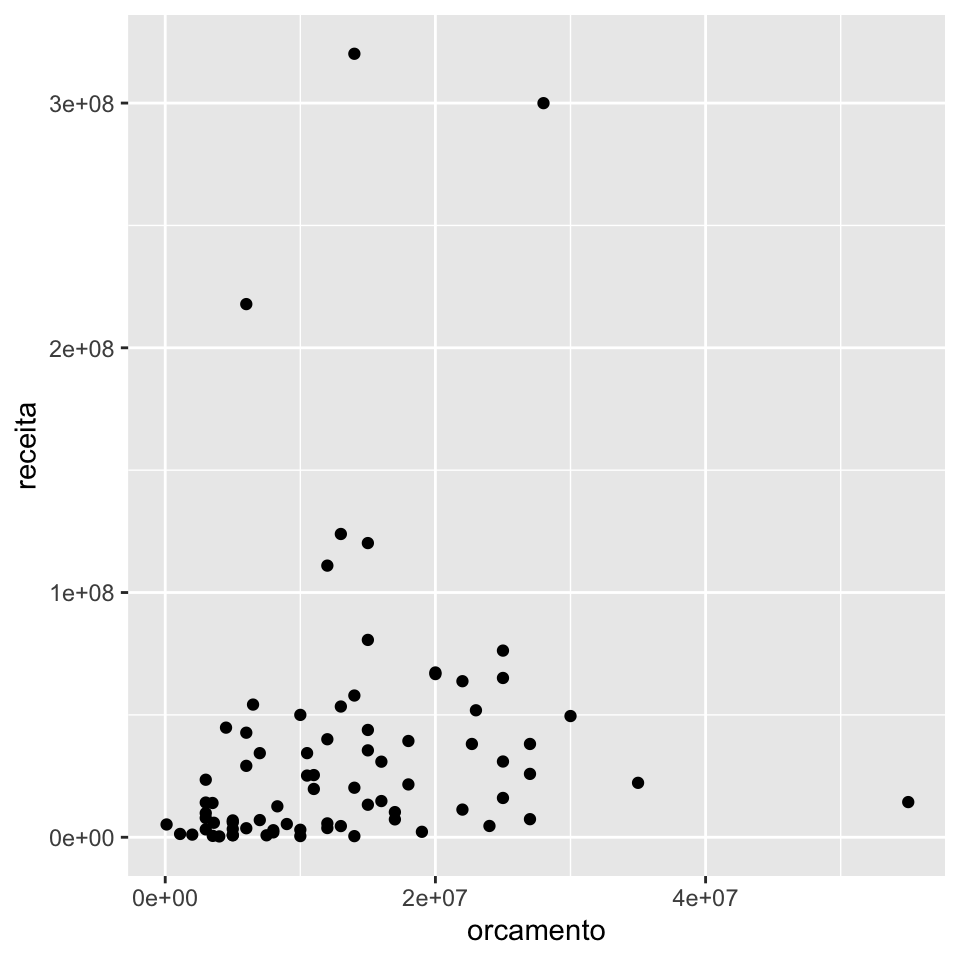

7.3 O pacote tidyr
Dentro do tidyverse, uma base tidy é uma base fácil de se trabalhar, isto é, fácil de se fazer manipulação de dados, fácil de se criar visualizações, fácil de se ajustar modelos e por aí vai.
Na prática, uma base tidy é aquela que se encaixa bem no framework do tidyverse, pois os pacotes como o dplyr e o ggplot2 foram desenvolvidos para funcionar bem com bases tidy. E assim como esses pacotes motivaram o uso de bases tidy, o conceito tidy motiva o surgimento de novos frameworks, como o tidymodels para modelagem.
As duas propriedades mais importantes de uma base tidy são:
cada coluna é uma variável;
cada linha é uma observação.
Essa definição proporciona uma maneira consistente de se referir a variáveis (nomes de colunas) e observações (índices das linhas).
O pacote {tidyr} possui funções que nos ajudam a deixar uma base bagunçada em uma base tidy. Ou então, nos ajudam a bagunçar um pouquinho a nossa base quando isso nos ajudar a produzir o resultados que queremos.
Vamos ver aqui algumas de suas principais funções:
separate()eunite(): para separar variáveis concatenadas em uma única coluna ou uni-las.pivot_wider()epivot_longer(): para pirvotar a base.nest()eunnest(): para criar list columns.
Como motivação para utilizar esssas funções, vamos utilizar a nossa boa e velha base imdb. Essa base pode ser baixada clicando aqui.
library(dplyr)
library(tidyr)
library(ggplot2)
imdb <- readr::read_rds("imdb.rds")7.3.1 separate() e unite()
A função separate() separa duas ou mais variáveis que estão concatenadas em uma mesma coluna. A sintaxe da função está apresentada abaixo.
dados %>%
separate(
col = coluna_velha,
into = c("colunas", "novas"),
sep = "separador"
)Como exemplo, vamos transformar a coluna generos da base IMDB em três colunas, cada uma com um dos gêneros do filme. Lembrando que os valores da coluna generos estão no seguinte formato:
imdb %>% pull(generos) %>% head()## [1] "Action|Adventure|Fantasy|Sci-Fi"
## [2] "Action|Adventure|Fantasy"
## [3] "Action|Thriller"
## [4] "Action|Adventure|Sci-Fi"
## [5] "Action|Adventure|Romance"
## [6] "Adventure|Animation|Comedy|Family|Fantasy|Musical|Romance"Veja que agora, temos 3 colunas de gênero. Filmes com menos de 3 gêneros recebem NA na coluna genero2 e/ou genero3. Os gêneros sobressalentes são descartados, assim como a coluna generos original.
imdb %>%
separate(
col = generos,
into = c("genero1", "genero2", "genero3"),
sep = "\\|"
)## Warning: Expected 3 pieces. Additional pieces discarded in 1052 rows [1, 6, 12,
## 13, 16, 18, 23, 24, 25, 28, 32, 34, 36, 39, 40, 43, 47, 48, 49, 50, ...].## Warning: Expected 3 pieces. Missing pieces filled with `NA` in 1537 rows [3, 19,
## 21, 42, 84, 88, 92, 102, 106, 111, 113, 129, 138, 147, 178, 183, 186, 219, 222,
## 233, ...].## # A tibble: 3,807 x 17
## titulo ano diretor duracao cor genero1 genero2 genero3 pais
## <chr> <int> <chr> <int> <chr> <chr> <chr> <chr> <chr>
## 1 Avata… 2009 James … 178 Color Action Advent… Fantasy USA
## 2 Pirat… 2007 Gore V… 169 Color Action Advent… Fantasy USA
## 3 The D… 2012 Christ… 164 Color Action Thrill… <NA> USA
## 4 John … 2012 Andrew… 132 Color Action Advent… Sci-Fi USA
## 5 Spide… 2007 Sam Ra… 156 Color Action Advent… Romance USA
## 6 Tangl… 2010 Nathan… 100 Color Advent… Animat… Comedy USA
## 7 Aveng… 2015 Joss W… 141 Color Action Advent… Sci-Fi USA
## 8 Batma… 2016 Zack S… 183 Color Action Advent… Sci-Fi USA
## 9 Super… 2006 Bryan … 169 Color Action Advent… Sci-Fi USA
## 10 Pirat… 2006 Gore V… 151 Color Action Advent… Fantasy USA
## # … with 3,797 more rows, and 8 more variables: classificacao <chr>,
## # orcamento <int>, receita <int>, nota_imdb <dbl>, likes_facebook <int>,
## # ator_1 <chr>, ator_2 <chr>, ator_3 <chr>A função unite() realiza a operação inversa da função separate(). Ela concatena os valores de várias variáveis em uma única coluna. A sintaxe é a seguinte:
dados %>%
unite(
col = coluna_nova,
colunas_para_juntar,
sep = "separador"
)Como exemplo, vamos agora transformar as colunas ator1, ator2 e ator3 em uma única coluna atores. Lembrando que essas colunas estão no formato abaixo.
imdb %>% select(starts_with("ator")) %>% head(3)## # A tibble: 3 x 3
## ator_1 ator_2 ator_3
## <chr> <chr> <chr>
## 1 CCH Pounder Joel David Moore Wes Studi
## 2 Johnny Depp Orlando Bloom Jack Davenport
## 3 Tom Hardy Christian Bale Joseph Gordon-LevittVeja que agora a coluna atores possui os 3 atores concatenados. Se a ordem das colunas ator1, ator2 e ator3 nos trazia a informação de protagonismo, essa informação passa a ficar implícita nesse novo formato. As 3 colunas originais são removidas da base resultante.
imdb %>%
unite(
col = "elenco",
starts_with("ator"),
sep = " - "
) %>%
select(elenco)## # A tibble: 3,807 x 1
## elenco
## <chr>
## 1 CCH Pounder - Joel David Moore - Wes Studi
## 2 Johnny Depp - Orlando Bloom - Jack Davenport
## 3 Tom Hardy - Christian Bale - Joseph Gordon-Levitt
## 4 Daryl Sabara - Samantha Morton - Polly Walker
## 5 J.K. Simmons - James Franco - Kirsten Dunst
## 6 Brad Garrett - Donna Murphy - M.C. Gainey
## 7 Chris Hemsworth - Robert Downey Jr. - Scarlett Johansson
## 8 Henry Cavill - Lauren Cohan - Alan D. Purwin
## 9 Kevin Spacey - Marlon Brando - Frank Langella
## 10 Johnny Depp - Orlando Bloom - Jack Davenport
## # … with 3,797 more rows7.3.2 Pivotagem
O conceito de pivotagem no tidyverse se refere a mudança da estrutura da base, geralmente para alcançar o formato tidy.
Geralmente realizamos pivotagem quando nossas linhas não são unidades observacionais ou nossas colunas não são variáveis. Ela é similiar à pivotagem do Excel, mas um pouco mais complexa.
O ato de pivotar resulta em transformar uma base de dados long em wide e vice-versa.
Uma base no formato long possui mais linhas e pode ter menos colunas, enquanto no formato wide poussi menos linhas e pode ter mais colunas
Esses formatos são sempre relativos às colunas que estão sendo pivotadas, sendo que uma base tidy pode estar tanto no formato long quanto wide.
Antigamente, utilizávamos as funções gather() e spread() para fazer as operações de pivotagem.
Agora, no lugar de gather(), utilizamos a função pivot_longer(). Abaixo, transformamos as colunas ator1, ator2 e ator3 em duas colunas: ator_atriz e protagonismo.
imdb %>%
pivot_longer(
cols = starts_with("ator"),
names_to = "protagonismo",
values_to = "ator_atriz"
) %>%
select(titulo, ator_atriz, protagonismo) %>%
head(6)## # A tibble: 6 x 3
## titulo ator_atriz protagonismo
## <chr> <chr> <chr>
## 1 Avatar CCH Pounder ator_1
## 2 Avatar Joel David Moore ator_2
## 3 Avatar Wes Studi ator_3
## 4 Pirates of the Caribbean: At World's End Johnny Depp ator_1
## 5 Pirates of the Caribbean: At World's End Orlando Bloom ator_2
## 6 Pirates of the Caribbean: At World's End Jack Davenport ator_3Se considerarmos que na análise da base IMDB cada observação deve ser um filme, então essa nova base já não mais tidy, pois agora cada filme aparece em três linhas diferentes, uma vez para cada um de seus atores.
Nesse sentido, embora possa parecer que a variável protagonismo estava implícita na base original, ela não é uma variável de fato. Todos filmes têm um ator_1, um ator_2 e um ator_3. Não existe nenhuma informação sobre o filme que podemos tirar da coluna protagonismo, pois ela qualifica apenas os atores, não o filme em si.
A função pivot_wider() faz a operação inversa da pivot_longer(). Sem aplicarmos as duas funções em sequência, voltamos para a base original.
imdb %>%
pivot_longer(
cols = starts_with("ator"),
names_to = "ator_protagonismo",
values_to = "ator_nome"
) %>%
pivot_wider(
names_from = "ator_protagonismo",
values_from = "ator_nome"
) %>%
head(4)## Warning: Values are not uniquely identified; output will contain list-cols.
## * Use `values_fn = list` to suppress this warning.
## * Use `values_fn = length` to identify where the duplicates arise
## * Use `values_fn = {summary_fun}` to summarise duplicates## # A tibble: 4 x 15
## titulo ano diretor duracao cor generos pais classificacao orcamento
## <chr> <int> <chr> <int> <chr> <chr> <chr> <chr> <int>
## 1 Avata… 2009 James … 178 Color Action… USA A partir de … 237000000
## 2 Pirat… 2007 Gore V… 169 Color Action… USA A partir de … 300000000
## 3 The D… 2012 Christ… 164 Color Action… USA A partir de … 250000000
## 4 John … 2012 Andrew… 132 Color Action… USA A partir de … 263700000
## # … with 6 more variables: receita <int>, nota_imdb <dbl>,
## # likes_facebook <int>, ator_1 <list>, ator_2 <list>, ator_3 <list>A base imdb não possui nenhuma variável que faça sentido aplicarmos diretamente a função pivot_wider(). Vamos então considerar a seguinte tabela derivada da base imdb:
tab_romance_terror <- imdb %>%
filter(ano >= 2010) %>%
mutate(
genero = case_when(
stringr::str_detect(generos, "Romance") ~ "Romance",
stringr::str_detect(generos, "Horror") ~ "Horror",
TRUE ~ NA_character_
)
) %>%
filter(!is.na(genero)) %>%
group_by(ano, genero) %>%
summarise(receita_media = mean(receita, na.rm = TRUE))## `summarise()` regrouping output by 'ano' (override with `.groups` argument)Essa tabela possui a receita média dos filmes de romance e terror nos anos de 2010 a 2016.
Para apresentar essa tabela em uma reunião, por exemplo, pode ficar ser mais agradável ter os anos nas colunas e não nas linhas. Para isso, basta utilizarmos a função pivot_wider().
# Tabela original
tab_romance_terror## # A tibble: 14 x 3
## # Groups: ano [7]
## ano genero receita_media
## <int> <chr> <dbl>
## 1 2010 Horror 30242147.
## 2 2010 Romance 48834552
## 3 2011 Horror 33186210.
## 4 2011 Romance 40780528.
## 5 2012 Horror 36090815.
## 6 2012 Romance 53134506.
## 7 2013 Horror 56829163
## 8 2013 Romance 25590508
## 9 2014 Horror 37324785.
## 10 2014 Romance 51353872.
## 11 2015 Horror 27965711.
## 12 2015 Romance 60166036.
## 13 2016 Horror 57896396.
## 14 2016 Romance 105439985.# Tabela com os anos nas colunas
tab_romance_terror %>%
pivot_wider(
names_from = ano,
values_from = receita_media
)## # A tibble: 2 x 8
## genero `2010` `2011` `2012` `2013` `2014` `2015` `2016`
## <chr> <dbl> <dbl> <dbl> <dbl> <dbl> <dbl> <dbl>
## 1 Horror 30242147. 33186210. 36090815. 56829163 37324785. 27965711. 57896396.
## 2 Romance 48834552 40780528. 53134506. 25590508 51353872. 60166036. 105439985.Esse é um caso que bagunçar um pouquinho a tabela nos trouxe um resultado desejado.
7.3.3 List columns
Um terceiro conceito de dados tidy é que cada célula da tabela possui um valor. No entanto, quando estamos programando, muitas vezes vale apena abandonar essa definição e guardarmos objetos mais complexos nas células de uma tabela.
Utilizando as chamadas list columns podemos guardar virtualmente qualquer objeto em nossas tibbles, como gráficos, resultados de modelos ou até mesmo outras tabelas.
Uma forma de trabalhar com list columns consiste em utilizarmos as funções
nest(): para criar uma list column;unnest(): para desfazer uma list column.
A forma mais simples de utilizarmos uma list column é aninhar a nossa base com relação a uma variável.
imdb_nest <- imdb %>%
group_by(ano) %>%
nest() %>%
arrange(ano)
head(imdb_nest, 8)## # A tibble: 8 x 2
## # Groups: ano [8]
## ano data
## <int> <list>
## 1 1916 <tibble [1 × 14]>
## 2 1920 <tibble [1 × 14]>
## 3 1925 <tibble [1 × 14]>
## 4 1929 <tibble [1 × 14]>
## 5 1930 <tibble [1 × 14]>
## 6 1932 <tibble [1 × 14]>
## 7 1933 <tibble [2 × 14]>
## 8 1934 <tibble [1 × 14]>A base imdb_nest possui duas colunas ano e data e uma linha para cada ano. Na coluna data, temos o restante da base imdb, recortada para cada um dos anos.
Abaixo, acessmos os dados do único filme de 1916 (primeira linha da base imdb_nest).
imdb_nest$data[[1]]## # A tibble: 1 x 14
## titulo diretor duracao cor generos pais classificacao orcamento receita
## <chr> <chr> <int> <chr> <chr> <chr> <chr> <int> <int>
## 1 Intol… D.W. G… 123 Blac… Drama|… USA Outros 385907 NA
## # … with 5 more variables: nota_imdb <dbl>, likes_facebook <int>, ator_1 <chr>,
## # ator_2 <chr>, ator_3 <chr>Imagine que queiramos fazer, para cada ano, um gráfico de dispersão da receita contra o orçamento dos filmes lançados no ano.
Com a base no formato de list columns, basta criarmos uma função para gerar o gráfico e utilizarmos a função purrr::map().
Abaixo, construímos a função fazer_grafico_dispersao(), que será aplicada a cada uma das bases contidas na coluna data da base imdb_nest. Os gráficos, respectivamos a cada ano, são salvos na coluna grafico.
fazer_grafico_dispersao <- function(tab) {
tab %>%
ggplot(aes(x = orcamento, y = receita)) +
geom_point()
}
imdb_graficos <- imdb_nest %>%
mutate(
grafico = purrr::map(data, fazer_grafico_dispersao)
)
head(imdb_graficos, 6)## # A tibble: 6 x 3
## # Groups: ano [6]
## ano data grafico
## <int> <list> <list>
## 1 1916 <tibble [1 × 14]> <gg>
## 2 1920 <tibble [1 × 14]> <gg>
## 3 1925 <tibble [1 × 14]> <gg>
## 4 1929 <tibble [1 × 14]> <gg>
## 5 1930 <tibble [1 × 14]> <gg>
## 6 1932 <tibble [1 × 14]> <gg>Para acessar cada um dos gráficos, basta rodar o código abaixo.
# Pegando o gráfico referente ao ano de 2000
imdb_graficos$grafico[[74]]## Warning: Removed 5 rows containing missing values (geom_point).
Ou, escolhendo diretamente pelo ano
imdb_graficos %>%
filter(ano == 2000) %>%
pull(grafico)## [[1]]## Warning: Removed 5 rows containing missing values (geom_point).
A função unnest() remove a estrutura de list column. Fazendo a operação abaixo, voltamos para a base imdb original.
imdb_nest %>%
unnest(cols = "data")## # A tibble: 3,807 x 15
## # Groups: ano [91]
## ano titulo diretor duracao cor generos pais classificacao orcamento
## <int> <chr> <chr> <int> <chr> <chr> <chr> <chr> <int>
## 1 1916 Intol… D.W. G… 123 Blac… Drama|… USA Outros 385907
## 2 1920 Over … Harry … 110 Blac… Crime|… USA Outros 100000
## 3 1925 The B… King V… 151 Blac… Drama|… USA Outros 245000
## 4 1929 The B… Harry … 100 Blac… Musica… USA Outros 379000
## 5 1930 Hell'… Howard… 96 Blac… Drama|… USA Outros 3950000
## 6 1932 A Far… Frank … 79 Blac… Drama|… USA Outros 800000
## 7 1933 42nd … Lloyd … 89 Blac… Comedy… USA Outros 439000
## 8 1933 She D… Lowell… 66 Blac… Comedy… USA Outros 200000
## 9 1934 It Ha… Frank … 65 Blac… Comedy… USA Outros 325000
## 10 1935 Top H… Mark S… 81 Blac… Comedy… USA Outros 609000
## # … with 3,797 more rows, and 6 more variables: receita <int>, nota_imdb <dbl>,
## # likes_facebook <int>, ator_1 <chr>, ator_2 <chr>, ator_3 <chr>7.3.4 Exercícios
1. Crie 5 novas colunas de gêneros na base imdb, cada uma com um dos gêneros contidos na coluna generos. Para os filmes com menos de 5 gêneros, substitua os valores NA pela string “inexistente”.
2. Substitua os “????” no código abaixo para criar uma tabela do lucro médio dos filmes ao longo dos anos de 2000 a 2016, com cada ano sendo uma coluna da base.
imdb %>%
mutate(lucro = receita - orcamento) %>%
filter(ano %in% "????") %>%
group_by("????") %>%
summarise(lucro_medio = "????") %>%
pivot_wider(names_from = "????", values_from = "????")Para os exercícios 3, 4 e 5, vamos utilize a base pokemon, disponível no pacote basesCursoR.
install.packages("remotes")
remotes::install_github("curso-r/basesCursoR")3. Utilize a função unite() para juntar as duas colunas de tipo em uma única coluna na base pokemon.
4. Utilize a função unite() para juntar as três colunas de cor em uma única coluna na base pokemon. Faça isso sem remover as 3 colunas originais.
5. Utilizando a base pokemon, resolva os itens abaixo:
a. Utilize a função pivot_longer() para criar uma única coluna de tipo na base pokemon.
b. Utilize a base criada no item (a) e escreva um código para descobrir qual o tipo mais frequente na base, independentemente se ele é primário (tipo_1) ou secundário (tipo_2).
6. Escreva uma função que receba uma base qualquer e o nome de uma coluna numérica dessa base e retorne uma figura com um gráfico de dispersão da coluna escolhida contra cada uma das outras variáveis numéricas da base.